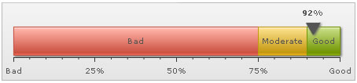

Linear Gauge > Creating a simple gauge |
||||||||||||
As a first chart, we would be plotting the value of Customer Satisfaction Survey, on a scale of 0 to 100%. The final result would look something as under: |
||||||||||||
|  | ||||||||||||
The various tasks involved in building this chart are:
With the tasks defined, now lets get to the XML side of things. |
||||||||||||
| Defining the color range scale | ||||||||||||
Since we're plotting customer satisfaction index for a fictional company, let us first define the scales for measuring this index. The scales would look as under in a tabular form: |
||||||||||||
|
||||||||||||
| XML for the chart | ||||||||||||
| The XML for the entire chart can be listed as under: | ||||||||||||
<chart lowerLimit='0' upperLimit='100' lowerLimitDisplay='Bad' upperLimitDisplay='Good' palette='1' numberSuffix='%' chartRightMargin='20'> |
||||||||||||
| Explanation | ||||||||||||
First of all comes the <chart> element which is the starting element for any chart that you create using FusionWidgets. Now we define the lower and upper limits of the gauge scale. To define the limits, we use the lowerLimit and upperLimit attributes of the <chart> element. We've asked the chart to show lower limit text as Bad and upper limit text as Good. We also set the palette number and number suffix (the character which would show up at the end of end number). |
||||||||||||
| <chart lowerLimit='0' upperLimit='100' lowerLimitDisplay='Bad' upperLimitDisplay='Good' palette='1' numberSuffix='%' chartRightMargin='20'> | ||||||||||||
There are other attributes of the <chart> element which we would not be delving into now, because of this being a really basic chart. Next, we need to define our color range. As we had earlier seen, this chart has 3 color ranges. To define the color range, we use the <colorRange> element, which is an immediate child of the <chart> element. Under each <colorRange> element, we place a <color> element specifying a single color range as shown in the code below. |
||||||||||||
| <colorRange> <color minValue='0' maxValue='75' code='FF654F' label='Bad'/> <color minValue='75' maxValue='90' code='F6BD0F' label='Moderate'/> <color minValue='90' maxValue='100' code='8BBA00' label='Good'/> </colorRange> |
||||||||||||
Now that we've the color ranges in place, we need the pointer to point to the desired value (92% in our case). We create the pointer using the <pointers><pointer .../></pointers> elements, as shown below. |
||||||||||||
| <pointers> <pointer value='92' /> </pointers> |
||||||||||||
You can customize the pointer's visual properties using the attributes of <pointer> element, as explained in next sections. FusionWidgets linear gauge chart allows you to have multiple pointers on a single chart. To have multiple pointers, just keep on adding <pointer...> element within the <pointers> tag with the required attributes. And with this, you've created your first linear gauge. Next, we'll see how to customize the various facets of this chart. |